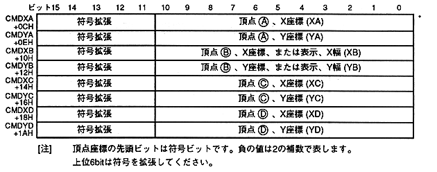

Table 8.6 Correspondence between commands and CMDXA to CMDYD
Command | CMDXA | CMDXB | CMDXC | CMDXD | ||||||||||||||||||||||||
Standard sprite drawing command | Vertex (A) | - | - | - | ||||||||||||||||||||||||
Rectangle sprite drawing command | Specify two coordinates | Vertex (A) | − | Vertex (C ) | − | |||||||||||||||||||||||
Fixed point specification | Fixed point coordinates | Display width | - | - | ||||||||||||||||||||||||
Transform sprite drawing command | Vertex (A) | Vertex (B) | Vertex (C) | Vertex (D) | ||||||||||||||||||||||||
Polygon drawing command | Vertex (A) | Vertex (B) | Vertex (C) | Vertex (D) | ||||||||||||||||||||||||
Polyline drawing command | Vertex (A) | Vertex (B) / TD> | ||||||||||||||||||||||||||